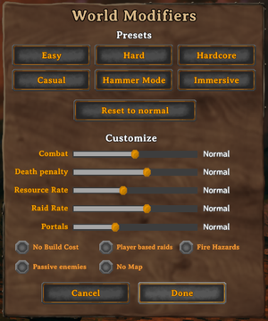

世界修改器
本站支持中英文站内搜索。带 ↗ 的链接指向外部网站；各页来源版本见页脚。
世界修改器可定制参数增减挑战，位于加入世界界面，也可专用服务器命令行或游戏内F5控制台开发命令设置。


除参数滑块，还有简单、困难、硬核、休闲、锤子及沉浸预设。
修正值
战斗 设置
具体各难度效果如下：
| 玩家 伤害 (%) | 敌人伤害 (%) | 敌人速度和大小(%) | 敌人等级上升率(%) | |
|---|---|---|---|---|
| 轻松模式 | 125 | 50 | 90 | 100 |
| 简单模式 | 110 | 75 | 90 | 100 |
| 正常模式 | 100 | 100 | 100 | 100 |
| 困难模式 | 85 | 150 | 110 | 120 |
| 极难 | 70 | 200 | 120 | 140 |
困难模式及极难更容易生成高级敌人。
玩家伤害百分比修正不显示于背包伤害范围或命中数字。
死亡惩罚
死亡惩罚滑块影响死亡的多方面，独立因素包括：
- 设备，死亡时穿戴或使用的背包物品。
- 物品栏，以及所有未穿戴或未使用的其他物品
- 技能丧失,减为:全部 技能 玩家的等级
| 说明 | 设备 | 物品栏 | 技能丧失 | |
|---|---|---|---|---|
| 休闲模式 | 你不会丢失已穿着的装备，技能丢失相对正常模式较少。 | 保持原样 | 已丢弃 | 1% |
| 轻松模式 | 你会掉落所有物品，技能丢失比正常模式低很多。 | 已丢弃 | 已丢弃 | 1% |
| 简单模式 | 你会掉落所有物品，技能丢失比正常模式低。 | 已丢弃 | 已丢弃 | 2.5% |
| 正常模式 | 你会掉落所有物品，技能丢失正常。 | 已丢弃 | 已丢弃 | 5% |
| 困难模式 | 已装备的物品会掉落，其他随身物品会永久丢失，技能丢失更快。 | 已丢弃 | 被摧毁 | 7.5% |
| 硬核模式 | 你会永久失去随身物品和技能。 | 被摧毁 | 被摧毁 | 100% |
资源倍率
范围为正常生物及世界可搜刮对象掉落的0.5x至3x，鱼等少数例外，是否有意未知。
突袭设置
控制袭基地频率，即使EventRate无，夜间袭击仍发生。
| EventRate (%) | 袭击间隔（分钟） | 袭击概率（%） | |
|---|---|---|---|
| 无 | 0 | - | - |
| 更少 | 200 | 92 | 10 |
| 少 | 150 | 69 | 13.33 |
| 正常模式 | 100 | 46 | 20 |
| 更多 | 60 | 27.6 | 33.33 |
| 更多 | 30 | 13.8 | 66.67 |
传送门 设置
工具锤- 模式
- 允许免费建造任何可用锤子建造的物品。
- 在制作站制作装备的不影响消耗。
- 锤子模式拆木石堆会消失，，但不提供那50件物品通常返还材料，无论原先是否正常模式制作。
无建造成本
- 建筑无需材料，但仍须正常解锁配方。
温顺敌人
- 敌对生物不会在没有挑衅的情况下主动攻击。
根据玩家进度突袭
- 袭击按个人进度，而非服务器击败首领。希望不同进度玩家更友好，建议此设置。
无地图
- 你将无法使用地图或小地图。这会使游戏比原定设计更难。
火灾
- 木头可全世界燃烧蔓延，不仅灰烬之地。
世界进度标记
修正保存于世界进度标记，控制台设置移除键也可控制。百分比键按值除100读取，未设置倍率键为1.0。
Game.UpdateWorldRates读取以下倍率键，乘对应速率。ResourceRate缩放符合条件掉量，不改变数据排除类型。EventRate乘间隔、除概率，值高则更少事件且每次更不易触发；零阻止常规检查。
| 钥匙 | 乘数适用于: |
|---|---|
PlayerDamage |
玩家对非玩家角色造成的伤害 |
EnemyDamage |
非玩家角色对非玩家角色造成的伤害 |
ResourceRate |
符合条件的资源和战利品掉落数量 |
StaminaRate, EitrRate, DurabilityRate, FoodRate, AdrenalineRate, MoveStaminaRate, StaminaRegenRate |
对应的资源、恢复或消耗速率 |
SkillGainRate |
技能收益 |
SkillReductionRate |
普通死亡时的技能削减 |
EnemySpeedSize |
敌方速度与大小 |
EnemyLevelUpRate |
敌人等级- 上升的概率 |
CarryWeightRate |
负重 |
EventRate |
随机事件间隔和概率 |
可设置以下键以修改游戏行为：
- AllPiecesUnlocked：设置后解锁所有建筑部件。
- AllRecipesUnlocked：设置后解锁所有配方。
- DeathDeleteItems：死亡删除全部物品，除非设置DeathDeleteUnequipped或DeathKeepEquip。
- DeathDeleteUnequipped：死亡删除未装备物品。
- DeathKeepEquip：设置后死亡时保留已装备物品。
- DeathSkillsReset：设置后死亡时失去所有技能。
- DungeonBuild：设置后允许在地牢中建造。
- Fire：设置后启用火灾危险。
- NoBuildCost：设置后建造不消耗资源。
- NoCraftCost：设置后制作不消耗资源。
- NoBossPortals：设置后无法在首领附近使用传送门。
- NoMap：设置后无法使用地图。
- NoPortals：设置后无法使用传送门。
- NoWorkbench：设置后无需工作台即可建造。
- PassiveMobs：设置后敌人保持被动。
- PlayerEvents：事件条件采用个人键。
- TeleportAll：设置后所有物品均可传送。
可用以下键对游戏设置施加倍率：
- EnemyDamage
- EnemyLevelUpRate
- EnemySpeedSize
- EventRate
- MoveStaminaRate
- PlayerDamage
- ResourceRate
- SkillGainRate
- SkillReductionRate
- StaminaRate
- StaminaRegenRate
- EitrRate
- DurabilityRate
- FoodRate
- AdrenalineRate
- CarryWeightRate
倍率键默认100，例如玩家伤害提高50%，使用setkey PlayerDamage 150。
世界等级可用于尚未完成的新游戏+功能：
- WorldLevel [value]
- WorldLevelLockedTools：工具等级检查同时检查世界等级。
说明
- 世界修改器在以下更新中加入： 希尔德的请求 更新
- 滑块正常时，玩法大致同更新前。
- 资源倍率向上取整，因此敌人、浆果等多数掉落1.5x实际等于2x。
- 资源倍率不影响鱼、战利品和首领掉落物
- 若使用F5控制台将世界修改器从普通改为其他设置，目前已知恢复普通的唯一方法是将整体模式重置为普通。
- 例如setworldmodifier portals casual将传送设休闲。
- setworldmodifier portals normal无法恢复正常。
- 目前仅setworldpreset default重置全部修正，会重置所有setworldmodifier键。
成就
- 无地图:
 探路者 • "在没有地图的情况下朝四个方位远行。"
探路者 • "在没有地图的情况下朝四个方位远行。"
- 预设：普通、困难或极难
 超强维京人 • "击败正常或以上难度的所有boss。"
超强维京人 • "击败正常或以上难度的所有boss。"
- 预设：困难或极难
 狩猎大师 • “在困难难度下击杀每一种生物。”
狩猎大师 • “在困难难度下击杀每一种生物。” 最强维京人 • “困难难度击败全部首领。”
最强维京人 • “困难难度击败全部首领。”
| 攻略 | |
|---|---|
| 玩家 | |
| 战斗 | |
| 生成 | |
| 建材 | |
| 界面 | |
| 世界 | |
| 杂项 | |
| 开发 | |
World Modifiers allow the player to customize a variety of parameters to increase or decrease the challenge of the game. They can be found on the Join World screen. Modifiers can also be set on a dedicated server via command line, or using devcommands in the in-game F5 console.
As well as sliders for each of the changeable parameters, there are also a selection of difficulty presets: Easy, Hard, Hardcore, Casual, Hammer mode, and Immersive.
Changing the difficulty settings does not prevent obtaining achievements. Only select achievements are gated behind specific World Modifiers, see § Achievements below.
Modifiers
Combat Settings
In concrete terms, the following are the effects of each difficulty setting:
| Player Damage (%) | Enemy Damage (%) | Enemy Speed & Size (%) | Enemy Level Up Rate (%) | |
|---|---|---|---|---|
| Very Easy | 125 | 50 | 90 | 100 |
| Easy | 110 | 75 | 90 | 100 |
| Normal | 100 | 100 | 100 | 100 |
| Hard | 85 | 150 | 110 | 120 |
| Very Hard | 70 | 200 | 120 | 140 |
In Hard and Very Hard settings, there is a higher probability of spawning high-level enemies.
Player Damage (%) modifications are not reflected in the values shown on the screen, either in weapon damage ranges in the inventory or upon successful hits to a creature.
Death Penalty
The death penalty slider affects several aspects of what happens to a player character upon Death. Independent factors include:
- Equipment, the inventory items that are worn or in use at the moment the player dies
- Inventory, all other items that weren't worn or in use
- Skill loss, a reduction to all Skill levels for the player
- The listed percentage is the portion of total skill level value lost
- The loss is not rounded, and new, otherwise unattainable decimal levels will be set, even though the decimals are truncated
- Every skill's next level requirement is recalculated for the new, reduced level and progress is set to zero -- this progress loss is not impacted by the death penalty settings
- Example: A player's Run skill is 70, halfway to 71, and they die on the "easy" death penalty setting. 2.5% of the level value of 70 is lost and the new, effective level for the Run skill is set to 68.25, visualized in the UI as 68. The required experience to the next level, 69.25, is calculated and progress towards it is set to 0.
| Description | Equipment | Inventory | Skill loss | |
|---|---|---|---|---|
| Casual | You do not drop equipped gear, and skills are reduced a lot less than on normal mode. | Kept | Dropped | 1% |
| Very easy | You drop all items, and skills are reduced a lot less than on normal mode. | Dropped | Dropped | 1% |
| Easy | You drop all items, and skills are reduced less than on normal mode. | Dropped | Dropped | 2.5% |
| Normal | You drop all items, and skills are reduced normally. | Dropped | Dropped | 5% |
| Hard | Equipped items are dropped, the rest of your inventory is lost permanently, and skills are reduced faster. | Dropped | Destroyed | 7.5% |
| Hardcore | You lose all carried items and skills permanently. | Destroyed | Destroyed | 100% |
Resource Rate
Ranges from 0.5x to 3x normal drop rate from mobs and lootable objects in the world. There are a few exceptions (not sure if intentional) such as fish.
Raid Settings
Governs how often enemies may raid your base, although night raids will still occur even when setting the EventRate to none.
| EventRate (%) | Raid Interval (min) | Raid Chance (%) | |
|---|---|---|---|
| None | 0 | - | - |
| Much less | 200 | 92 | 10 |
| Less | 150 | 69 | 13.33 |
| Normal | 100 | 46 | 20 |
| More | 60 | 27.6 | 33.33 |
| Much more | 30 | 13.8 | 66.67 |
Portal Settings
- Portal items - Allows all items to be teleported through Portals, not requiring a Portal Stone
- Normal - Non-portalable items apply as standard
- No boss portals - Portals aren't available when a boss is active
- No portals - No portals are allowed at all in the world
Hammer-mode
- Allows no-build cost on any item buildable with a hammer.
- Doesn't affect the cost of making gear at a crafting station.
- Deconstructing a log pile or rock pile while in hammer-mode will cause the stack to disappear without giving the 50 items it would usually give (regardless of being originally crafted while in non-hammer-mode).
No Build Cost
- Build pieces require no materials to build. You still need to discover recipes as per usual.
Passive enemies
- Enemies won't attack until you provoke them.
Player based raids
- Raids are based on the progress of each individual player, rather than on which bosses have been killed on the server. This setting is recommended if you want the game to be slightly friendlier to players with different progress.
No Map
- You will not have access to the map or the minimap. This makes the game harder than intended.
Fire Hazards
- Wood can catch fire and spread throughout the whole world, not just in the Ashlands.
Global keys
World modifiers are stored in Global Keys. Console commands can be used to set or remove keys which provides another way to set world modifiers. The game reads percentage-valued keys as the key value divided by 100; an unset scalar key therefore has a multiplier of 1.0.
The following scalar keys are read by `Game.UpdateWorldRates` and multiply the corresponding rate. `ResourceRate` scales eligible drop amounts and leaves the item-type exclusions defined by the game data unchanged. `EventRate` multiplies event intervals and divides event chances, so higher values make events less frequent but less likely at each check; zero prevents the regular event check.
| Key | Multiplier applies to |
|---|---|
PlayerDamage |
Damage dealt by players to non-player characters |
EnemyDamage |
Damage dealt by non-player characters to non-player characters |
ResourceRate |
Eligible resource and loot drop amounts |
StaminaRate, EitrRate, DurabilityRate, FoodRate, AdrenalineRate, MoveStaminaRate, StaminaRegenRate |
Their corresponding resource, regeneration, or drain rates |
SkillGainRate |
Skill gain |
SkillReductionRate |
Skill reduction on ordinary death |
EnemySpeedSize |
Enemy speed and size |
EnemyLevelUpRate |
Enemy level-up probability |
CarryWeightRate |
Carry weight |
EventRate |
Random-event intervals and chances |
Following keys can be set to modify game behavior:
- AllPiecesUnlocked: If set, all pieces are unlocked.
- AllRecipesUnlocked: If set, all recipes are unlocked.
- DeathDeleteItems: If set, all items are deleted on death (unless DeathDeleteUnequipped or DeathKeepEquip is set).
- DeathDeleteUnequipped: If set, unequipped items are deleted on death.
- DeathKeepEquip: If set, equipped items are kept on death.
- DeathSkillsReset: If set, all skills are lost on death.
- DungeonBuild: If set, can build in dungeons.
- Fire: If set, fire hazards is enabled.
- NoBuildCost: if set, building is free.
- NoCraftCost: If set, crafting is free.
- NoBossPortals: If set, portals can't be used near bosses.
- NoMap: If set, map can't be used.
- NoPortals: If set, portals can't be used.
- NoWorkbench: If set, can build without workbench.
- PassiveMobs: If set, enemies are passive.
- PlayerEvents: If set, events use player-specific keys when checking event requirements.
- TeleportAll: If set, all items can be teleported.
Following keys can be used to multiply a game setting:
- EnemyDamage
- EnemyLevelUpRate
- EnemySpeedSize
- EventRate
- MoveStaminaRate
- PlayerDamage
- ResourceRate
- SkillGainRate
- SkillReductionRate
- StaminaRate
- StaminaRegenRate
- EitrRate
- DurabilityRate
- FoodRate
- AdrenalineRate
- CarryWeightRate
Each scalar key has a default value of 100. For example to increase player damage by 50%, use command setkey PlayerDamage 150
World level can be used for unfinished NewGame+ feature:
- WorldLevel [value]
- WorldLevelLockedTools: If set, tool tier check also checks the world level.
Notes
- World Modifiers were introduced in the Hildir's Request update
- With sliders set to Normal, the game will play much as it did before the patch.
- The Resource Rate modifier does round up, so 1.5x is effectively equal to 2x for various drops such as from enemies, berry bushes and so on.
- Resource rate does not affect Fish, Trophies and boss drops
- If using the F5 console to change a world modifier from normal, the only currently known way to reset to normal is to reset the overall mode to normal.
- For example, portals are changed to casual using
setworldmodifier portals casual - To return them to "normal" is not possible using
setworldmodifier portals normal - The only way currently is to reset all modifiers
setworldpreset defaultwhich would reset ALL keys set bysetworldmodifier
- For example, portals are changed to casual using
Achievements
- No Map:
- The Pathfinder • "Travel far in all four directions, without using a map."
- Presets: Normal, Hard or Very Hard
- The Tough Viking • "Defeat all bosses on normal difficulty or higher."
- Presets: Hard or Very Hard
- The Master Hunter • "Kill every kind of creature on hard difficulty."
- The Toughest Viking • "Defeat all bosses on hard difficulty."
| Guides | |
|---|---|
| Player | Player • Health • Stamina • Eitr • Adrenaline • Death • Forsaken power • Skills • Status effects • Movement speed • Magic • Fishing • Riding • Sleeping • Emotes |
| Combat | |
| Spawning | |
| Building | |
| UI | |
| World | |
| Misc | |
| Development | |